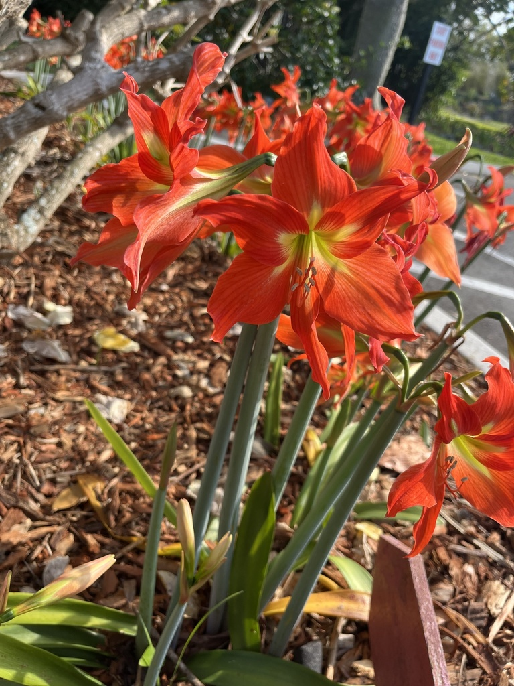

- The big, trumpet-shaped blooms on a tall hollow stalk are the classic "amaryllis" sold around the holidays — though botanically it is Hippeastrum.
- Each flower can be six inches or more across, in vivid red, pink, white, or striped.
- The whole plant grows from a large bulb, and that bulb is the most poisonous part.
- It contains lycorine, the same toxin found in daffodils and crinum lilies.
Native to tropical and subtropical South America. Bred extensively into the large-flowered hybrids sold worldwide, and grown as a garden bulb in warm climates including Florida.
- The plants sold as "amaryllis," especially the showy holiday bulbs, are mostly Hippeastrum — a separate genus from the true amaryllis, though the common name has stuck for generations. From a single large bulb rises a tall, hollow stalk topped with two to several enormous trumpet-shaped flowers in red, pink, white, salmon, or candy-striped patterns.
- The drama comes with a caution. Like its relatives in the amaryllis family — daffodils, crinums, spider lilies — it contains lycorine and related alkaloids, concentrated most heavily in the bulb. Eating it causes vomiting, drooling, and abdominal upset, and a large dose is more serious.
- In Florida's mild climate the bulbs can stay in the ground year-round and multiply, returning to bloom each year rather than being treated as one-time holiday gifts.
The large flowers can attract bees, butterflies, and hummingbirds when in bloom. Wildlife value is otherwise limited, and the toxic bulbs are not a safe food source.
A bulb plant sending up strap leaves and a tall, hollow flower stalk.
Two to several very large, trumpet-shaped blooms atop a thick hollow stalk; red, pink, white, salmon, or striped.
Large, rounded, the most toxic part.
Long, strap-shaped, glossy green, appearing with or after the flowers.
Huge trumpet flowers on a tall, leafless hollow stalk rising from strap-like leaves. The flower size alone is distinctive.
Keep dogs away from this plant — the ASPCA lists Hippeastrum as toxic to dogs, cats, and horses, with the bulb being the most dangerous part. Lycorine and related alkaloids can cause vomiting, diarrhea, abdominal pain, excessive drooling, and in larger ingestions, tremors or cardiac effects. If a pet chews on any part of the plant, contact your veterinarian promptly.
People are generally at low risk from casual contact, but ingesting the bulb or other plant parts can cause stomach upset and should be avoided; this is an ornamental plant, not a food plant.
Modern hybrid amaryllis bulbs are a major global trade commodity. The Netherlands, South Africa, Israel, and Brazil are the leading producers; the bulbs sold in Florida garden centers are typically Dutch or Israeli stock grown from cultivars developed over two-plus centuries of breeding.
The eastern lubber grasshopper (Romalea microptera) is noted by UF/IFAS as an occasional chewing pest on amaryllis in Florida. Handpicking is the recommended first response; the insects are large and easy to spot.

- © kgreenwood14 (CC-BY-NC), via iNaturalist
- © jsea (CC-BY-NC), via iNaturalist